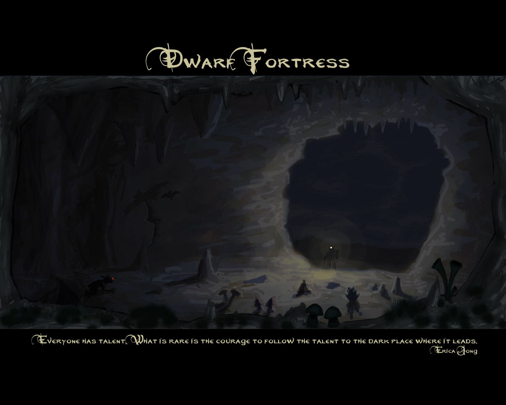

Quicklinks
All these stories are about vanilla DF.
::: Sociopathic Dwarves ::: The Tale of Ingish Pillarspeak ::: Endok and the Gorillas :::
::: The Legend of the Ice Fisher ::: The Hamlet of Tyranny ::: The Legend of Tholtig Cryptbrain :::
::: The Rise and Fall of Firetomb ::: The Hidden Tower ::: A Tale of two dwarves::: One Stands Alone :::
I post here a small selection of Wallpapers and well-written Stories about dwarf fortress. I took the stories from the now offline (?) site called http://dfstories.com/ I did not directly ask the authors, since I cant find all of them, but I included their names in the titles. If you do not want your work posted here, please leave me a mail and I remove it at once. One the other hand, if you want a story of yours added to this collection, please leave me a mail as well.
There is also the excellent Hall of Legends in the bay12forum.
Wallpapers
|
by deon
 |
by davion
 |
1600x1200 |
1280x1024 |
1024x768 |
|
Stories
by unknown
I want to share with you a quick note on a bug that I found vaguely disturbing though: First, I'm sure you've learned by now that dwarves don't like death. It leads to depression and post-traumatic stress disorder. Put simply, if they see enough, they flip out and kill something, themselves or those around them. However, certain dwarves are sociopaths. They lack the natural emotional empathy and sensitivity of the proper dwarf. They look just like every other dwarf they act just like every other dwarf… yet, like Arnold Schwarzenegger in the Terminator, they are perfect little emotionless machines. They make excellent butchers and fantastic soldiers. I happened to get lucky and had one of these little soulless wonders as my butcher. I have a policy of making newborn puppies and ponies available for adoption and, if ponies are not adopted by the time they grow up, I send them off to be knackered. It just so happens that I sent out my butcher to round up the herd and thin the ranks one day. I saw 'Stray Horse (Tame) has been struck down! Stray Horse (Tame) has been struck down! Krazen Ergoblasbit (Tame) has been struck down!'
A sinking feeling hit me. The butcher had just grabbed the wrong horse. He'd somehow found someone's pet and killed it. I expected a dwarf to go crazy any minute. When I looked at the corpse, I saw that Krazen was marked as being the pet of the Butcher.
I blinked. He'd never owned a pet before. I checked his thoughts. He was ecstatic. He had been comforted by a pet recently. He had adopted a pet recently. The little bastard befriended and adopted the horse while leading him to the block, improved his mood, killed him and had ZERO sense of remorse, guilt or loss. He just didn't care. I'm starting to think about waiting until he's asleep, removing his door and replacing it with a floodgate just to give the creepy bastard the Cask of Amontillado treatment.
I found a kidnapped dwarf in Legends mode called Ingish Pillarspeak, who ended up being the sole defender of his adopted goblin civilization, killing over two hundred dwarves, including his own mother, father, father in law (he married another kidnapped dwarf, she was killed by dwarves early in the war), brother in law (dueled him five times), several brothers, and a sister. He was at war with his original dwarven civilization from the year 30 to 70, armed with a crossbow and presumably a knife. He liked to rip off the third toe of his opponents. Oh, and he ate the dwarves he killed (never his own family, at least).
He was the victor of his final battle against his original dwarven civilization, but still (somehow) lost the war. He joined the new civilization and later died of old age, wandering the wild.
When I visited the now-dwarven dark fortress he'd defended for so long in Adventure mode, there was a goblin priest in the temple. Every dwarf I talked to had a relative who'd been killed by Ingish Pillarspeak.
I imagine the war was ended when Ingish was shown his own kill list, and it was explained how many of his own family he'd slain in battle. I imagine Ingish negotiated amnesty for the goblin priest, who may have been the only other surviving member of his adopted society by then.
Late in his life Ingish began worshiping a rampaging giant he'd seen battle his goblin kidnapper while still a prisoner. The giant passed through his life kind of like Halley's comet, right at the beginning and just before the end. The list of gods and demons he'd worshiped and the various entities he'd claimed membership in made me sad: he fought so hard for so long, and for what? His dwarveness, his goblinness, his marriage, his nation, his sense of who his family was and who he had to protect, as it all kept shifting and changing around him. He was a dwarf constantly in search of something to believe in, and his capacity for belief gave him a terrible power. If that didn't alienate him from his fellow dwarves, I'm sure the fact he'd personally killed (and occasionally eaten) everyone's grandparents did.
I deleted his whole world after I realized I'd spent 40 hours researching his history in a week that I worked 50 hours, and was still accruing more detail. When I found out he'd shot and killed his youngest sister I cried. DF creates epic stories.
So there I was, working on my latest fort. I'd just finished the final touches on the parapets and catwalks and was working on building the second layer to the outer walls. A happy troop of gorillas was passing by, and a lowly stone engraver, Endok, was out smoothing over some boulders for the main road.
Endok did not care for gorillas, it seems.
Endok did not care for them, at all.
Endok, for whatever intextricable reason, had decided to bring a steel crossbow and quiver of bolts that day. She'd never shot before, never hunted, never trained, never took the life of any living thing. She was as pacifistic as they come.
But she did not like gorillas.
There she sat, chiseling away at that boulder when in the corner of her eye she saw it, those bastard silverbacked beasts. A fury of rage, a stretch of bowstring,
PLUNG
Through the eye, one gorilla down
PLUNG PLUNG
Two more down, half the troop scattered in fear, two charged Endok full force.
PLUNG
Make that one. The other reached her and swiped
THUD
Dazed, the Gorilla stumbled back, Endok's mind flashed back to those days in the Mountainhome, she lived in a small cave her father had dug by hand. It was in the deep jungles in soft loam soil, dug deep into the shale bedrock beneath. Ever since her mother had died, it was just her and Dad… Until that fateful thursday, 5th granite, 184, when the Gorillas came.
WOOSH
Endok ducks under a mighty swing from the great ape's hand, landing a solid upper cut with the front of her crossbow. The beast is down, reeling from the hit. Endok slowly loads one last round.
When the gorillas came, it was with terrible raucous noise, the great thrashing of the waterfalls that lay on the other side of the mountainhome would have been drowned out by the whoops and hollers of the gorillas, and the other animals fleeing from them. Daddy told her to wait inside, so wait she did, in her room on the bottom floor, just a few feet of earth between her and the magma channels that led to the mountainhome and gave her father the ability to work. He had been a metalcrafter, building intricate and tiny things that only a dwarf could appreciate. Little metal things, pretty things which Endok loved, but no more pretty things for Endok. For hours she waited for her father, who had taken that old copper axe that hung over the mantle out, he went to protect the mountainhome from the raiding gorillas. He was not a novice, he had served in the Dwarven Guard for many years, devoting his weekends to train for the event of a goblin or elven siege. "Those good-fer-nuthin' elfs," he'd say to Endok, "all they ever got is wood for wood, never 'preciate true metalcraft…" Endok would not see her father again.
Some two days after the hollers quieted, a knock came to the door, Endok had not eaten in those days, didn't drink, didn't sleep.
"Hello? Anyone here?", said a voice, hollow and distant to Endok.
"Hello?"
"I... I'm", Endok struggled for words, "I'm here."
"Ma'am, my name is Urist Macbaddenews, and I'm afraid I have something for you, it's not a pleasant responsibility, but…", he handed her a bloodstained war axe, made of Copper, the same one that fit where the dustless outline lay above the mantle. She choked back a tear and looked up, he pointed her towards a box that lay outside. She knew what was inside, she knew it was her father.
"Now, we are happy to take him to be buried in the grand halls of the mountainhome, he was a brave dwarf, and killed many of those beasts before he was finally killed. The King himself has expressed his desire for him to lie-in-state with the other heroes who fell, but I suggested that we ask the families first, and our Gracious King agreed with my small suggestion. Now Ma'am, would you like your father to be buried there? Or do you have some family plot you'd perhaps prefer? Speaking of… where's your mom, miss?"
Endok sobbed, she managed to say that her mother had died, and that her father should be buried next to her, in the tomb in the lowest level of the house. Endok left that day for a new home, she vowed never to build a metal thing, never to return, to build a new life somewhere where no gorilla would ever dare go.
PLUNG WOOSH
Endok's bolt flew past the ear of the great gorilla. She saw him, lying there helpless, she saw his little son, off 10 or 20 feet away. She looked at him, and in that instant they knew each others' life story. She knew his mate had died. Maybe Endok killed her, who knows. She knew that that little gorilla had nothing else, she knew she had become the monster that killed her father, but she wouldn't let that happen to her.
She fell into a deep depression after that, and less than two weeks later, Endok was found dead, with the tiniest metal thing in her hands, a little gorilla made of silver and menacing with spikes of obsidian. The tiniest metal thing, and an old copper war axe sticking out of her chest.
*NB. This, of course, is somewhat embellished, but all the (non-flashback) events basically happened. A Engraver named Endok randomly decided to carry around a Steel crossbow and bolts, picked a fight with a passing troop of gorillas, killed 5 of them, spared one (she missed from 1 tile away, no kidding), walked back, fell into a melancholy and killed herself after retrieving a metal trinket from the stockpile and a copper war axe. I have no idea what sequence of events led to this, I wish I recorded the game, but oh my god, greatest thing ever.
Okay then, young'en, sit down and hear the story about how your old grandad became the most legendary fisherman ever to walk the Realm of Legends. It all started in the winter of fifty one. You may not believe it, but we had no idea what "winter" even meant back then. Our people come from the south, where it never gets cold. I'd never seen snow in my life, and I had no idea a whole river could freeze over. So back then, we didn't have no rules against walking on the ice. In fact, we all thought it was a blast! When that river first froze, we had a party on the ice. Kids and dogs and donkeys and even oldsters slippin' and slidin' all over the place. Bein' a fisherdwarf, I was a bit concerned that I was out of a job, but I spied some steam rising from the river a ways off one morning, and I decided to go check it out.
Well, you know how the waterfall freezes up into a big ice damn, and the big pool above it doesn't freeze? I was the first Dwarf to find that out that winter, and I was in fisherman's heaven. All the fish had schooled up there, and they were biting like there's no tomorrow, practically throwing themselves on the shore to get at my bait. I was just casting and realin' 'em in as fast as I could.
That's about when I heard *CRACK* from the ice damn. Ol' Bossy, the expedition leader back then, yelled at me to run for it, but it was too late. He got real scared the water would swamp the fort through our summer fishing port, so he started building a drawbridge to seal it up if the water got too high. He yelled over that they'd build me a bridge to get back as soon as they were done.
But right about then, a big bunch of shiftless layabouts showed up looking for beds and hot meals. And one of 'em gets that crazy look in her eye, you know the one, and starts yellin' about how she needs a clothing shop, she's got this great idea for a thing called a "coat," says it will keep us all real warm. We figure it must be some kind of portable wood furnace, turns out it's just a thick shirt, but of course YOU know what a coat is, we all do, now.
Well, we all know you can't keep a crazydwarf waiting for her workshop or she might get a little stab-happy. Nobody wants to get poked with knitting needles, so that was the top priority. Meanwhile, I was going a little crazy myself, stuck out in the cold and the rain with no booze. I had plenty of food though! When them huge stacks of fish started rotting, I got an idea. Booze is just rotted plants, right? Well let me tell you, I ate a LOT of rotten fish that spring, trying to get drunk. Turns out, no matter how rotten a fish gets, it won't turn into booze. It WILL turn into something that makes your head go funny, but not in a good way. The fish started talking to me, tellin' me all their secrets, tellin' me the other dwarfs didn't like me, that's why they left me over here, they were all laughin' at me and drinkin' MY booze! I'd show THEM! I'd build my OWN fortress! Out of fish!
It took five strong dwarves to pull me out of my fish palace once they got the bridge built. I was King of All Fish, what did I need them for? It didn't help matters that they was all holding their noses and throwin' up left and right. I'd long since stopped noticing the smell. Luckily, one of them shiftless layabouts knew how to make this stuff called "soap." It confused everyone at first, we all thought we should eat it, but that didn't work. He said you put it where it smells, and eating something is the only comfortable way to get it to where it smells, you don't want stuff goin' in the other way, so, yeah, laugh all you want youngster, you've got it easy nowadays with your soap and your coats and your rules about not walkin' on the ice and no fishin' in the winter and your enormous jungle-gym made out of fish bones. All thanks to yer elders, and don't you forget it!
Everyone thought I was crazy, sure, but those fish really did tell me their secrets. I can catch enough fish in a day to feed the fort for a year. They won't even let me catch fish most of the time, say I use up all the barrels in an hour, nobody can cook that many fish, give it a rest old man, we get it, you are the King of the Fish.
Just a note, the climate indicator on Embark said "warm." Don't believe the climate indicator, if you are working down below and you get a big long lag in the winter for no apparent reason, pause the game and go look at the surface, see if stuff froze up, and if it has, mark the ice as restricted and turn off fishing! Old Urist McFishystink was a merely competent fisherdwarf when he got stuck across the river, by the time I got a bridge built, he was legendary. He had nothing to do all spring but eat, sleep, drink river water, and fish. There was a literal wall of fish running the whole length of the river, starting with piles of two and three fish, ending with stacks of thirty or so! I wasn't quick enough forbidding them, either. The whole fortress emptied out for a Grand Fish Parade, and most of it was THIS close to rotting before they grabbed it, so the whole kitchen complex turned purple for months before I got all the rotting fish cleared out. I'm just thankful they weren't jumped by Goblins during the Fish Parade, it was right about the time in spring when the Elven caravan shows up, but I'm guessing not even Goblins could stand the smell. God only knows what the Elves thought of the whole thing. "You SICK little monkeys! What ARE you doing to those poor fish?!? You are never going to eat them all. Is this some kind of Dwarven religious ritual? I will never understand you people. No, just bring out the gold, I don't even want to know. Wait, are you EATING soap?!?!"
by unknown
I was visiting a friend of mine earlier today. So it happens neckbeards flock around neckbeards, and he was currently deep into a game of Dwarf Fortress. As I stepped into his room he motions me to quickly check out his monitor.
On it was the largest demon invasion I've ever seen. But I'm getting ahead of myself. Before you hear the end of the story, you will have to hear the beginning as relayed to me by my friend.
Having started as your standard DF, the Hamlet of Tyranny was uneventful by /tg/ standards. Sure there would be caravans and immigrants and occasional (though unusually rare) seiges, but there was a dark and DEADLY secret buried beneath the hills. And his name was Ashmalice.
Ashmalice was a fire demon of legendary status. Not only had he existed in the prehistory of the fort, but he had over 550 kills – which included 2 entire tribes of goblins, a handful of elves, and a terrifying amount of dwarves… one of whom was the king of the mountain-homes.
Fast forwarding to the present time, major construction was underway of the fort. Many many immigrants had arrived over the years and times were good for the dwarves. Having many legendary carvers and warriors my friend grew lax in his defenses. And his dwarves paid the price when a miner unearthed a glowing pit deep below the dungeons carved into the mountain.
Within an hour my friend's fortress was besieged by a nearly unending horde of demonic horrors. Ill equipped to deal with the threat immediately, the population of the Hamlet began dropping exponentially. Not even a panicked redirection of the river into the lower levels was enough to staunch the influx of demons, only enough to slow them long enough for the major walkways to be collapsed to buy some precious time.
Luckilly (and cleverly) my friend had built his fortress in such a way that if any large section had collapsed, then all escape routes would lead out into the wilderness and on a path far from the fortress and defendable by collapsing the ceiling via lever to flood seawater into the tunnel. Though no dwarf was alive on that side of the map, or able to reach it to pull the lever, my friend had bought the dwarves much needed time, though when Ashmalice made himself known all seemed futile. Even moreso when Stuvok lost his mind with rage.
Stuvok was one of the founding 7. He was an ex-miner turned blacksmith of legendary status. He was a monster of a dwarf that all dwarves aspired to be. And he had just lost his wife Doken (another of the starting 7) to the demon Ashmalice. His sorrow was felt by the surviving clan as he tore through them one by one unopposed. Only when he ran into his workshop and was locked in did his rage abate.
Morale was rock bottom. Several dwarves commit suicide in this dark hour. And of the handfull who remained of this once great fortress, few were willing to do anything at all, except the only other remaining dwarf of the founders: the engraver Sil. In the months that followed, the floors were carved with graven images of his follow brethren. All hope seemed lost. But this was not the end for the Hamlet. Not just yet…
In his grief and mourning, Stuvok opened his heart to the spirits of the dead. And one day they came to him in spirit. In his posessed mood he plotted and planned and (ironically) with the materials available to him, crafted an artifact clearly in homage to his wife: Endless Death of Tears – a sword with an image of a dwarf holding a piece of glass – glass that his wife used daily in her trade.
My friend had been content to just flood the map with lava and end the game after such losses. But upon seeing this artifact his neckbeard overtook him and he knew that Doken, the dwarves, the king, must all be avenged! And thankfully for me, he decided to continue. Fast forwarding again to the present (the time at which I had come in to see him play) my friend had safely excavated what he could of the fortress and moved all activity to a small corner of the interior. When all levers were erected, dwarves armed, and preparations complete, he unpaused the game for me.
A few dwarves made suicide runs to the bottom of the dungeons and collapsed them – which in turn lowered the debris above into a sinkhole that breached a large hole for the demons to pour from back into the fort. A few more dwarves valiantly fired into the oncomming tide of hate, but they were nothing but fodder that bought precious moments for the true plan to kick in. A masterfully placed lever that had yet been unpulled brought down the entire mountain through the legendary dining hall ceiling; crushing almost half of the intruding horde.
As planned, the demons made a bee-line through the side hallways through rows of blade traps. Demons were chewed up by the blades, but still they came. And so did "He." Ashmalice not only avoided the fatal cave-in, passed the slicing blades, and bypassed the numerous flooding-trap chambers, but he and a squad of equally lucky frog demons carved and scorched their way into the final defensive line. Among their victims was Stuvok; unable to avenge his beloved. And the last handfull of dwarves were quickly reduced to 2 – Sil the engraver and the legendary captain of the guard, Daneken.
As respected and powerful as Stuvok had been, Daneken was that and more. He was a god among his clan, and had once in his long career single-handedly repelled a goblin siege led by a cyclops, and had helped wrestle a dragon to death. And now armed with his dead friend's artifact sword, he was seeing red. Daneken had been stationed at the edge of a chasm (my friend's map had a pit AND chasm that had been unearthed, but it was amazingly only filled with tiny spiders that were easilly dispatched in the early years of the fort). A single bridge had been built to span the chasm, and would have been later expanded as housing. But that plan was no longer. And this was it. This was the end of the dwarves of the Hamlet of Tyranny. But they would not go quietly.
As the demons approached Daneken threw himself at them in a rage. Ashmalice blasted him with demonic flames, but Daneken was imbued with the collective rage of his people and carved through the frog retainers with little signs of stopping. Ashmalice, however, had seen the death of a king and was not impressed with the antics of a lowly dwarf and sent him hurtling back onto the bridge – coincidentally knocking Sil over the edge. With his flesh scorching and his blood boiling, Denekan crawled to his feet just in time to see Ashmalice hover over him. With but a single push the fortress would be claimed by demons. But to my friend's and my own utter jaw-dropping amazement, it was the dwarves who claimed him.
Daneken, in a testament to his dwarfdom, slashed off one of Ashmalice's arm/wings and plunged Endless Death of Tears into his evil heart. Such was the force of the blow that the demon was hurled backwards off of the bridge and sent spiraling down into the unending darkness; spouting curses the entire way.
With his clan and his king avenged, Daneken himself tumbled from the bridge. But… one dwarf remained?
Awestruck by what had just happend, I urged my friend to quickly find the survivor! The menus opened, the tabs clicked, and we see that name. Sil. Sil? But he fell into the chasm! What was going on? With the battle essentially over and the remaining demons blocked from furthur intrusion by an unchecked flood of river water, we peer into the chasm. Several Z-levels down, on a tiny 2-square ledge, lay Sil – broken and bleeding, but alive.
With no way to save him, and with his entire clan residing in the afterlife, we debated how this should end. Should we just abandon the fort outright? Should we try and kill him somehow? What? In the end, however, we decided to let him create one more carving – one last testament to dwarfkind. This decision did not come lightly, as after such an epic climax, anything less would seem an insult. After all, maybe he would draw a picture of a plump helmet or something equally random. But still we left him to his work.
What did he draw? Moments before he bled to death? Alone on a cliff? The last gesture of the dwarves of The Hamlet of Tyranny?
A picture of a demon and some dwarves. The demon was in a fetal position. The dwarves were laughing.
Written by Darkflagrance.
This is the tragic but inspiring legend of Tholtig Momuzidek Lelumdoren, "Tholtig Cryptbrain the Waning Diamonds," and the bloody century and a half-long war with the elves that she was born into and died within. It is long, for it chronicles the epic of an entire dwarf civilization.
I discovered her story while I was browsing legends mode, tracing the many wars of the era. I happened to notice her name appear over and over, throughout the decades. She was the fifth and last ruler of the dwarven civilization known as the Bronze Orbs, and ruled the mountainhome of Circletower.
Her grandfather Meng Emetmistem Tirdugzodost Urrith, "Meng Freshportal the Brutal Rot of Scarring," had been the first of their line to rule Circletower, after the previous queen, the only daughter of the first ruler since time immemorial, who had died childless, slain by a titan after ruling for only less than a year. Meng had earned the throne after he himself stepped up to duel with the titan, driving it off but receiving a heavy wound to his lower body in the process.
It was Meng who had started the war with the elves, incensed over their devouring of sentient beings. In the year 81 he led ten of his best dwarves against fifteen of the elves of the Steamy Winds, slaying five of them in exchange for two of his comrades. Several dwarves who would go on to earn fame and honor earned their first kills in that first conflict, among them Goden Leafybridges the Talon of Shooting, the elder, dispossessed son of the first ruler of Circletower (294 kills), his wife Tosid Stockadefortunes the Lined Friend (146 kills), and Goden Routedgates the Jade Planes of Braving (23 kills).
However, Meng had picked as his foe a powerful elf civilization on the rise, known as the Steamy Winds. During the same years as they fought with the dwarves, the Steamy Winds declared war on the humans and a goblin tyranny ruled by a demon.
It was a world war of unimaginable scale. Cities and forest retreats were stained with the blood of literally tens of thousands of the dead, settlements were razed repeatedly by all sides as they fought over them, and the fortunes of empires often turned on a single battle. By the end of it all, over 250 years later, the great elven forest that once stretched across the map was reduced to scattered outposts – but this was long after the passing of Meng and his daughters.
Meng died forty years after claiming the throne in the year 113, and the skulls of 91 elves decorate the mausoleum where he was laid to rest. He had outlived all but one of his children, the rest having been slain (but thankfully not devoured) by elves.
The only survivor, Metthos Rodercatten Notlith Am, "Metthos Baldedchanneled the Ruin of Speaking," (101 kills) ruled for only seven years before her death while leading the Bronze Orbs to victory against a force of elves that outnumbered the dwarves more than 6 to 1. The throne passed on to her only daughter, the aforementioned Tholtig Cryptbrain, who had just turned 30. There had been no other children because Metthos' husband had been slain by elves two years after Tholtig's birth.
The odds would only get worse after her death.
As soon as she could raise a hammer at the age of twelve, Tholtig had joined her parents and grandparents on the battlefield. The dwarves had no choice, for their losses were so great that they needed every pair of hammer-wielding arms they could find. By the time she ascended the throne in 121, she had slain 48 elves and a cyclops, but the amount of dwarves left capable of wielding a weapon numbered less than ten. Nonetheless, she led them to victory in her first assault against the elves, but it was a Pyrrhic victory that saw the deaths of two of her children, including her eldest son.
The war saw the rise of numerous heroes and their offspring: among them Alath Pageplaited the Circular Tongs (60 kills, slain by a hydra in 103), Olon Orblabors the Fenced Sandal of Shadow (Alath's brother, 118 kills, who became a diplomat halfway through the war and stopped going into battle), Unib Lancemet the Way of Boiling (the sister of Alath and Olon, 8 kills, slain by an elven arrow), and Mafol Drilledhammer the Violence of Forests (Son of Tholtig, with a mere 5 kills before death by an arrow.) Many elf heroes of the wars with the humans and goblins, flouting long titles earned by the lives they had ended, met their end at the hands of Tholtig or her brothers and sisters in arms. A typical battle might see 281 elves arrayed against a mere 4 dwarves, only for 96 elves to perish with all 4 dwarves surviving, yet this continued year after year.
There was an elf leader who met each of the dwarf heroes in battle multiple times for eight years and escaped, before Tholtig finally killed him in their third duel. However, as time passed, the elves only grew more numerous, while the dwarves, their numbers decimated by constant warfare and their children dying without offspring, only grew closer to ultimate defeat.
Tholtig married Logem Uthmikmelbil Gosterudosiddor, "Logem Shaketomes the Hoary Men-larks," son of the heroes Leafybridges and Stockadefortunes from the first battle between the dwarves and elves, and brother of Alath, Olon, and Unib. Unlike previous rulers of the Bronze Orbs, Tholtig and her husband had many children, numbering ten in all.
However, fate was against the Bronze Orbs: eight of Tholtig's children died at tender ages shortly after taking up arms against the elves, and even the two who survived the wars met misfortune elsewhere. Her youngest daughter, Urist Joinedrings the Permanent Scars, who had slain 176 elves and survived countless battles, was killed by a hydra, but most tragically of all, Tholtig's eldest daughter and heir, Erush Racktoned the Rough Miseries of Quiescence, having slain 1007 elves, was killed at the age of 90 by the same titan that her great-grandfather King Meng had driven off to claim his throne, which had suddenly returned 100 years later to plague the Bronze Orbs.
However, time was a foe that even legendary force of arms could not overcome. In 200, five years after Tholtig mourned the passing of her last heir, an adventurer slew that same hydra that took the life of Tholtig's youngest daughter, and brought an end to the Age of Legends.
By then, only three dwarves remained to defend Circletower: Queen Tholtig, her husband Logem, and Obok Willbolt the Drinks of Ruining (a venerable dwarf, great-grandson of the heroes Goden and Tosid, who had witnessed the rise of Tholtig's grandfather and the beginning of the war a century ago, and amassed 1654 trophies.) Also present was the diplomat Olon, who by then must have been regretting the pacifism which had cost him equal glory.
Lacking children to carry on and therefore hope, the remaining dwarves slowly slipped away, Obok in 227, Logem in 237, and finally Olon the diplomat in 242.
For nearly ten years, from the year 237 onwards, Tholtig Cryptbrain defended her ancestral home of Circletower alone. Each of these years saw one hundred or more elves lay siege to the empty halls where Tholtig's entire clan lay sleeping, only to be driven back in bloody defeat.
Alone she stood, hammer in hand, the only force between her home and fiery conquest. Despite the injustice of fate that had taken away her children and the inevitability of defeat, she held her ground until at last in 246 when old age struck her down, something no mortal weapon could have aspired to. And so fell the last dwarf of the Bronze Orbs – and with her death ended their entire civilization and history.
Tholtig had lived for one hundred and fifty-six years, all of which had seen no peace for her, and outlived all of her children, her friends, and her husband Logem, who had died with 1955 kills.
The kills of Tholtig Cryptbrain the Waning Diamonds, Last Queen of the Bronze Orbs and Ruler of Circletower:
2341 kills.
I imagine that Tholtig considered her final end glorious, for she did not die an ignominious death, or fade away at the end of an age, but passed on at the height of her glory in the midst of war, hammer in hand, bringing down with her a great elven civilization, all the while proving her invincibility.
So passed the very last dwarf from the world.
As the fire crackled in the pine-log cabin, the dread of the bogeymen now safely avoided; Adol Gusilustir sat down with the human labourers and thanked them ever so dearly for letting him stay overnight, as to not let him face the cackling horror outside.
"So what's your story?" one of the children asked the dwarf, His bewildered eyes suggested he'd never seen a Dwarf before. "Me? I'm known as Adol Coppercrow… I'm the Militia Commander for the Holy Spears, in service of the dwarven fortress of Firetomb. My story is… A fresh wound."
The newly founded group known as 'The Imperial Hammer' was a decisive move that the royalty of The Paints of Wealth had planned on for years. The idea was for a fortress to be made in the far-flung ends of the world, to forge and create large amounts of wealth for the rest of the Dwarven kingdom. In the year of 275, after training the craftsdwarves and the Metalsmiths that were necessary to this project; seven brave dwarves ventured into the wilderness, to 'Strike the Earth'.
After 2 years of digging into the mountainside, the newly-found fortress of Firetomb had already created roughly 1,000 worth of goods, ready to be sold to the caravan that was arriving soon. Just as the caravan had been spotted across the horizon by the military who sparred in the courtyard- ready for any stealthy invasions of baby-snatchers or the thievery of wealth by the pests known as Kobolds; a humble soap-maker had one of those ideas; one of the ones you can't shake. He stormed out of his recently obtained bedroom towards the craftdwarf's shops. Being that the Masons and Bone carvers were working furiously in the crafting shops, the manager almost fell out of his chair when he heard about the Soap-maker's recent endeavour. The Soap-maker darted in and out of the stockpiles, grabbing cut Blood-stone, Wolf Bone, Chalk and some recently smelted Steel.
After the merchants departed, the Broker being quite pleased with selling most of the stone crafts for large amounts of alcohol, armour, weapons and some extra wood; the Soap-maker finished 'Sashafrasha', a Wolf Bone Sword. It was quite a sight, encrusted with spikes of Bloodstone and steel, and banded with chalk, engraved with a picture of a fabled dwarf battling a hydra.
Another few years on, the Military had swelled to a full 10 soldiers, seven of them already Legendary in their art of combat. The dwarf known as Adol Coppercrow had started sparring and fighting with 'Sashafrasha', and had grown accustom to using it. He would be seen everywhere with it. One particular account states that he was fending off the trolls in the under-caverns whilst the masons constructed a fortress into the cavern. Three of them against Adol, wearing only Bronze armour and a recently claimed copper helm (off the dead goblins, who attempted to raid the fortress annually) He was seen managing to dodge the swipes and grabs by the large hands of the Trolls. He sliced an arm off one troll, then a leg. As the troll slipped in and out of consciousness, Adol managed to punch one troll in the face, jamming the skull through its own brain. Then he managed to swing around to face the other troll, just as it grabbed him around his neck and began to strangle him fruitlessly. Adol stabbed the troll in the chest, tearing apart his intestines, causing the troll to throw up onto the floor, and Adol. The dwarf took his chance, and cut off the arm that was strangling him. As the troll unleashed a cry of sheer pain, Adol ended it with a swift stab into the face. The remaining troll who had been slipping in and out of consciousness swiped at Adol with what ounce of strength it had left, but Adol dodged the hand, and sliced the troll across the torso, causing it to sail off in a bloody arc. Adol stood there, in the bloodbath for a minute or two, then head back to his squad, to group up.
It was a winters eve, as the miners of Firetomb found a large menacing castle deep underground. The militia were tasked with scouting this anomaly. As the soldiers slowly stepped inside, they saw shifting figures inside, moaning endlessly. One of the dwarves stepped on a large pebble and tripped over. Just as the thud sounded, all of the figures turned around towards the dwarves- A horrid sight of blood and gore, Slugmen, Tigermen and Snailmen all shambling towards them with flesh dangling out of their 'Mouths'. The braver soldiers advanced forward, screaming like banshees as they charged into the pack of seemingly undead beasts. All that was to see was bloody arcs of arms and heads flying around the room. Two soldiers lost their lives as the Militia cleared the castle from floor to floor.
It was just as the militia stood at ease, making sure there were no more moans were within earshot. One of the more recent recruits, a spear dwarf, noticed an almost holy weapon in a mantelpiece as he spun around. It was an Adamantine Spear, So beautifully crafted, so well conditioned. He slowly caressed the spear in its mantle, and began trying to force the spear out of the stone. He pulled with all his might, and it slid out, causing him to stumble backwards. "Hey- Hey guys! Check this out!" he yelled profoundly, trying to show off his find. A glyph started to carve its way around his feat as the dwarves all stood around him, all in awe of this spear. The Glyph stopped, and it begun to glow brightly. The dwarves noticed the glowing floor, and all stepped away from it. As they took a few steps back, the floor collapsed into an abyss. The dwarves all looked at each other confusingly, before a braver Mace-dwarf slowly stepped towards this hole. As he peered into the hole, a pair of large tentacle-like arms shot out of the hole and wrapped around his head, and pulled him in. Then demons began to flood out of the hole and descend towards the hardened dwarves. Several of the dwarves managed to escape, and darted out of the castle towards the exit. As the soldiers regrouped in the Mine shafts, they saw the beasts still hot on their trail, many with fresh blood coating them. The soldiers all ran towards the mine entrance, in the heart of the fortress.
The Fortress of Firetomb was designed with the help of the most brilliant of architects. It was designed to be able to still continue existence even if it were locked up for 10 years, and able to be one giant death-trap to any invader from the outside. It was also designed with the knowledge that the caverns deep below the surface are filled with dangerous beasts like Trolls and Blind cave ogres. So the fortress was designed around the mines, in a way to avoid any of the general public getting slaughtered by anything if it 'were' to incur from the deep.
As the soldiers regrouped, they signalled for the gates to be shut and the traps to be armed- but they were too late. Many beasts that call the caverns home cannot destroy a gate, but if they can, they will be caught in the crossfire of traps. But this onslaught of constant demons were not fazed by the traps. The Militia charged into the demons to buy the rest of the populace time to figure out a Plan B.
The alarms were sounded to evacuate, the population of Firetomb all rushed for the front gates of the fortress. Among them was Adol, who had managed to escape the clutches of the demons. Only 37 of the total 98 dwarves who called Firetomb home got to the front gate. The rest were assumed to be dead, as the constant screaming and roaring would suffice as evidence. The front gates closed tight, and walls were built around them to stop the demons pouring forth into the countryside.
At that moment, squad of goblins had amassed in the horizon, all seeking revenge for their fallen comrades. Adol tried to defend the citizens, slashing and stabbing at the goblins, until the Goblin Commander whom was riding atop a troll, swung his mighty War hammer into the chest of the Dwarf, causing him to fly backwards and pass out.
Adol woke up later that evening. His eyes slowly adjusted to the setting sun, scanning the landscape for any sign of goblins. Nothing was there, No goblins, No dwarves… Nothing.
Adol stood up, wincing in pain as he breathed. He called out, but to no avail. Stood there for a while and attempted to recall anything that he learned about his surroundings. He remembered that there was a human settlement only about a day's travel away…
"And that's how I came to be here, in your hospitality." The dwarf muttered, sorrow in his tone.
"Well… If you'd like to stay with us for a while, we could use a little muscle around here… Got some outlaws causing us some mischief…"
- Se7en
Just a quick story I thought I'd type up. A tad rusty on the authoring side of things, but hey.
Most of it is true, exception to the whole Township thing. Just assume Adol went there after I abandoned the Fortress.
If you're wondering how I got the speardwarf to collect the spear, I quickly made him ununiformed, and got him (being the closest there) to remove the spear. Then I selected him to use the spear just as I noticed the floor next to him give way.
This was my first underground 'goodie' fortress, I knew that the glowing floor probably was a bad sign and all, but I wanted that spear, Hehe.
There was once a small but thriving fortress dug out under a mountain at the edge of a vast mountain range. There was a forest to the north, a brook on the west, a volcano on the southwest, a chasm on the southeast, and mountains on all other sides.
The land was so full of riches that the miners struck gold as soon as they started digging. The fortress grew slowly in size, but very quickly in wealth, as they were surrounded by precious metals and gems. When dwarven caravans returned to the Mountainhomes bearing golden crafts and platinum statues, they brought news of an outpost with immense wealth. The news spread like wildfire, and soon almost the whole world knew about the fortress.
However, as always, the news reached the wrong ears. Goblin and kobold thieves and ambushers came soon, eager to steal the riches. The fortress was still small in terms of population, but their military was made up of grim, determined dwarves who fought bravely. The outpost managed to repel all attacks with minimal loss. The population began to grow quickly as migrants arrived in huge numbers.
Soon thereafter, the mayor decided that he wanted a supply of magma for the smelters, and sent a group of miners to channel magma to the fortress from the volcano. But along with the magma came fire imps, fire men, and magma men, rapidly killing dwarves.
The mayor had also sent miners on an expedition to the far ends of the land to find more gems and ore. The miners dug faithfully, but forgot to block the tunnels they dug, and soon chasm creatures flooded into the fortress.
To cap it all off, the goblins chose that moment to send a huge siege party.
As the three separate armies advanced upon the fortress, the mayor consulted the captain of the guard, who told him that even if they managed to drive away both the chasm creatures and the magma creatures, the goblins would still finish them off. But the mayor had an idea. Miners were sent for an extremely important, secret mission. They dug out a large, temporary room for the dwarves, deep inside another mountain. The nobles were quickly rushed in, followed by civilians with food, drink, equipment, and treasures.
The chasm creatures were first to arrive at the fortress, and the military fought them bravely, killing some and driving away the rest. The captain of the guard then rushed his army into the secret room. Miners, meanwhile, dug a tunnel from the brook to the room, providing it with a water supply. Finally, the best mason built a thick wall to block the pathway, just as the magma creatures arrived.
The goblins arrived last, and were surprised to find the fortress completely devoid of dwarves. As they explored the fortress, it seemed as if it was devoid of treasure, too. Then the lava creatures burst in. There was a fast and furious battle between the goblins and the fire imps. The goblins managed to drive them back to the magma forge – a heroic feat – but magma men and fire men emerged from the magma. The goblins sent a few messengers to nearby goblin towers, just before they were all burnt to crisps. Soon, more chasm creatures spouted out of the tunnels, and joined forces with the magma creatures to battle more goblins who arrived. In short, there began an endless battle between the goblins and the creatures of the deep.
Time passed, and while the two armies fought off-and-on endlessly, the dwarves excavated their new mountain refuge from the inside. They dug until the mountain was almost entirely hollowed out. In the center was a vast tower, made of gold, silver and platinum. On it, there were hundreds of masterwork statues and engravings. Without the caravans to bring them food, (since most dwarven civilizations had erased them from their maps) they relied on subterranean farming and herding for their food, cloth and drink. They also mined deep into the earth, with tunnels reaching to various corners of the land. Their tower was completely self-sustaining, and like a wonderland for dwarves, with ponds, statue gardens, zoos and artificial waterfalls. The dwarves thrived.
The dwarves of the Hidden Tower, as they called themselves, survived for decades in this way. However, they did not realize that the fighting outside had ended, and did not know that dwarven adventurers had begun to repopulate the fortress again.
These new dwarves had managed to drive out the remaining goblins and tame the wild creatures of the land. However, they were surprised to find strange criss-crossing tunnels deep in the earth, and more surprised to find that much of the ore and gems had been excavated. They were also blocked out from a certain mountain by what were certainly dwarven-made walls. Alas, if the hidden dwarves had chosen to reveal themselves, they would have survived what was coming for them…
More than a century later, a terrible famine struck the Hidden Tower. A dwarf went fey and started screaming for glass. Since there was no means of making it, (the only thing the Tower lacked was a supply of sand) the dwarf went berserk. The mayor had not planned any assault on its citizens, so there was no military at all. The miners were the only dwarves who carried any weapons – their mining picks. Most unfortunately, the berserk dwarf was a legendary miner.
The hidden Tower was mainly focused on food production, so that its population of almost 500 would be sustained. The majority of the working class worked on farms, and in farmer's workshops, kitchens, stills, butcheries and fisheries. Fisherdwarves also fished in channeled streams from the brook and underground river. The berserk dwarf rampaged through the workshops, and slaughtered most of the workers.
The mayor immediately called for the other miners to subdue the berserk dwarf. Meanwhile, the dwarf in question worked his way through the workshops and onto the farms. There was a renovation project going on in the farms, and there were many farmers there. The miner killed most of the farmers, until one of them tried to wrestle the pick away from him. The farmer was killed almost instantly, but he enticed a few more farmers to try to grab the berserk dwarf. After a few minutes of struggling, the pick was pulled out of his hand.
The crazed dwarf was soon killed by the miners, but the damage was done. Almost all the farmers and food workshop workers were dead, with the rest injured. Altogether, 79 dwarves were killed. The smell of dwarf blood hung in the air for weeks. All the remaining ~400 dwarves attended a mass funeral, but many dwarves were unable to handle the loss of so many friends and soon went mad. These dwarves rioted throughout the tower, killing many other dwarves in their madness before they too were struck down by the miners.
At this point, about 300 sane (but still unhappy) dwarves remained. All the dwarves were put into the food industry, but it was still not enough, since the great majority of the workers were unskilled and unable to work fast enough.
With no excess plants available for brewing, the Tower ran out of alcohol. Without alcohol to sedate them, and with very little food, the dwarves became very unhappy. Some of them succumbed to melancholy. Some just starved to death. Others went berserk, killing even more dwarves, and causing even more unhappiness. The beautiful tower did not look so beautiful anymore, with bloodstains, corpses, and mad dwarves at every corner.
When the population of sane dwarves reached just 100, it was obvious that the Hidden Tower was going to fail.
There was only one dwarf alive who had lived before the construction of the tower. His name was Kogan, and he was not happy about the most recent turn of events, as he had seen the Tower grow all the way. He and his apprentice Mafol secretly went out to mine in the tunnels one evening, but instead of going to the usual digging site, they began to dig their way out. They dug all the way up to the surface, and, braving daylight after centuries, threw up promptly.
Both dwarves had a severe case of cave adaptation. Because of this, they were temporarily stunned, and did not notice the approach of a ferocious dragon above them. By luck, the dragon did not notice them either, and flew straight overhead to devour the new dwarves at the main fortress.
At night, when the sky was dark, the two dwarves went out exploring. They marvelled at the beautiful trees, the grass, and the fresh air. They soon reached the new settlement in the area. The dragon was, at that point, frying some dwarves inside the fortress. After killing all the new dwarves, the dragon was peacefully resting on its hoard, when the two miners stumbled in.
The dragon was quite intelligent, and knew immediately that these two dwarves were not from the fortress he had just depopulated. They were richly garbed with silk clothes, and their picks were set with diamonds. With a burst of flame the two miners were transformed into a pile of ash on the ground. However, the sighting of the two dwarves caused the dragon to ponder…
The dragon immediately set off to find where the mysterious miners had come from. He found the staircase and went on to find the Hidden Tower, full of more dwarves to eat.
All the dwarves were killed that night, and so ends the legend of the Hidden Tower.
Written by perterb
Now, here's the thing about dwarves: they're not like you and me. We wake up, we shower, we get dressed, we go to work, and while we're doing all this, sometimes we get an idea. "I should write a cookbook that focuses on pomegranates," we think, and then we get out of the shower and towel off and we don't write the book. "I should create a mosaic depicting Washington's terrible defeat at Fort Necessity," we think, and then, almost always, we reach our bus stop, we step off the bus, and we go on with our lives.
Dwarves aren't like that. They have lives, and jobs, just like us, and they have normal ideas that don't come to pass, just like you and me, but sometimes – often enough that the Dwarves have five different words for it, all of which translate, roughly, to "touched" – a dwarf gets a particularly strong idea, an idea that he can't shake. "I should write a cookbook that focuses on pomegranates," the dwarf will think, "and I will make the cover from pomegranate peel. And the ink will be made from pomegranate juice, and the pages shall be made of the finest papyrus, and the pages will be bound with a single thread of gold. And the book shall be called 'Berrydowned'."
The dwarf's co-workers might say to him "Hey, Arast, why did you stop hammering?" and Arast will say "Fuck you," walk in to a grocery store, kick everyone out, and spend the next nine hours obsessively examining each pomegranate to find the perfect materials for his cookbook. That's what dwarves are like.
This is a story about two dwarves in the fortress of Bekemlogem, "Springpainted." One of these dwarves became a legend. The other died miserably, starving in the dark. The first dwarf's name was Nish Oddomshetbøth. The second's was Urist Köbukrinal.
Bekemlogem was an unusual fortress, built as it was in the middle of a swamp. Dwarves, by their nature, are not fond of swamps. There's too much mud, for one thing, and too much water. There are many adjectives one can apply to a dwarf, but "moist" is not the first that comes to mind. This was not just any swamp, but a swamp that, as near as anyone could tell, was over an aquifer. An aquifer can make it hard to mine safely, and no mining means no profit. The leader of the expedition to found the fortress, a merchant by the name of Stukos Oddomsanreb, had to do an awful lot of fast-talking to persuade people that he wasn't crazy. "There's a caldera there," he insisted, "which has to be solid rock. We can tunnel down near the caldera, and mine under the aquifer. If we're careful, there's nothing to worry about."
Stukos was a good dwarf, but not a persuasive one. Only 6 other dwarves left the safety of the mountainhomes to try to find their fortune in Stukos's swampy paradise.
The funny thing about this is that Stukos turned out to be mostly right. There was solid rock near the caldera, and although the miners had to be careful to not accidentally take a bath in hot magma, they were able to dig down below the aquifer and establish workshops, where they began growing mushrooms and carving crafts to trade with anyone crazy or stupid enough to visit them out in the middle of the marshlands. Soon enough, they started attracting immigrants.
The swamp was peaceful and quiet. There weren't even any goblin attacks, and when was the last time you heard of a fortress that wasn't attacked by goblins? Even the goblins, it seems, were smart enough to avoid the swamp.
Nish, a glass-blower by trade, had arrived at Bekemlogem on a spring morning and was promptly informed that out here in the country they didn't have much call for fancy things like glass, that stone was good enough for plain-spoken honest dwarves, and that we don't have any sand around here anyway, so here's a crossbow and you're in the army now, son.
As I said, there were no goblins in the swamp, which was good, because there weren't any bolts for Nish's crossbow either, and even if there had been bolts, there was nothing to shoot at. Military service at Bekemlogem mostly involved standing around outside, swearing, and sweating, not necessarily in that order. Occasionally one of his squad-mates would offer to wrestle, to relieve the boredom, but this just made Nish feel even more uncomfortable, especially since this particular squad-mate always wanted to wrestle naked, "to keep our uniforms from getting wrinkled," he said.
So mostly Nish just stood outside in the swamp, sweating, and thought about beer.
Nish thought about dark beer, light beer, frothy beer, flat beer, ale, lager, porter, and stout. He thought about beer mugs, beer steins, beer taps, kegs of beer, a beer mug, tall glasses filled with beer, coasters that you could fling at people after you'd drunk enough beer from that stone beer mug, and a table for putting the beer mug on, except there needs to be a little bit of something on the bottom of the mug to make sure it doesn't scratch the table. A bit of turtle shell would be perfect. He thought about drinking beer on cold days, nice days, rainy days, hot and sticky days, when your hand slips on the beer mug and you drop it, spilling your beer, which is bad, so you'd want to have a good grip. Maybe you could nurl the handle? No, no, too boring. You want something textured. Something you can really feel. Bones. You could wrap the handle in small bones. But you'd have to position the handle so as not to obscure the carving on the mug, the carving depicting the founding of the first Fortress.
It was around this time that Nish dropped his crossbow and began slowly walking towards the nearby outdoor workshop, like he was in a trance. "Hey, get back to your post!" said his captain, Momuz. "Fuck you," said Nish. He walked inside to the workshop, elbowed the master stonecrafter in the face, picked him up by his breeches, and threw him out of the building. Momuz put his head in his hands, and moaned, as the realization hit him. "He's touched. This is going to end in blood."
In fact, it didn't end in blood. It ended in a lovely beer mug, engraved with an image of a dwarf raising a scepter, that Nish called "The Undignified Worries," which when you think about it is a truly appropriate name for a beer mug. Nish never drank from anything else for as long as he lived. On unveiling the masterful mug — and its artistry and craftsmanship were undeniable — Nish was honorably discharged from the army, was given his own workshop and a generous stipend, and basically allowed to do whatever the hell he wanted for the rest of his life. When not in his workshop, "whatever the hell he wanted" turned out to be drinking beer, from his mug, inside.
No, it didn't end in blood, but Momuz can be forgiven for thinking that it probably would. The funny thing about ideas — dwarven or human — is that there's no strict requirement that they be practical. We can all imagine building a hot-air balloon to fly to Jupiter, or making a bicycle entirely of bacon, or, to take an example from Minnie the Moocher, a diamond car with platinum wheels. But when a dwarf is touched by the idea of a car like that, he doesn't stop to think "this isn't practical." Instead, he starts looking around for diamonds and platinum.
What happens when a dwarf can't find enough diamonds and platinum to build his car? Someone dies. Every time.
Sometimes, the dwarf will go mad, grab the nearest weapon, and start cutting down anyone he comes across. This is what Momuz expected when he bemoaned Nish being touched, because that's what usually happens. Momuz, being captain of the guard, was likely to be the first person killed. An insane dwarf can usually take down four or five of his comrades before being killed himself. It's a lot easier to kill when you aren't afraid of dying.
Strangely, this outcome is viewed by most dwarves as the lesser of two evils.
Sometimes, instead of going on a rampage, the thwarted dwarf will kill himself. Suicide is not a part of dwarvish culture, and they would be bitterly offended to hear me describe it this way. Their word for this sort of death translates roughly to "melancholy." The melancholic dwarf stops eating, stops drinking, and simply wanders aimlessly around the halls, sometimes for months, until she or he eventually dies from starvation and malnutrition. This is infinitely worse for the dwarves than the violent outcome, which at least is over quickly.
The key thing to realize here is that to the dwarves, the failure of a touched dwarf to create his artifact is a failure of the community, not a failure of the dreamer. "If we had only dug deeper, and worked harder," they think, "we would have had enough diamonds and platinum for her to build that car. The vision of that car was a gift from the gods, and we were too shiftless and lazy to be able to claim it." The melancholic dwarf, dying slowly in public, is a constant reminder of the community's inadequacy.
Which brings us to Urist Köbukrinal, a name that to this day will make the dwarves of Bekemlogem weep in shame and shake in self-loathing. Urist was an engineer, a shy boy who one day was touched.
True to his nature, Urist snuck downstairs to the lowest levels of the fortress and, in the deep, quietly and shyly claimed a mechanic's workshop that no one was using. No one noticed he was missing at first, but when they finally found him in the deeps, he was surrounded by sketches of something, and refused to say a word. His sketches had rock, and bone, and cloth, and he was surrounded by pieces of rock of varying sizes. The town elders brought him all the cloth and bones they had, but none of it was right. They didn't know how it wasn't right; Urist wouldn't say.
It would be four months until the next caravan arrived. There was no way that Urist would be able to make whatever it was he was trying to make. And so the dwarven elders of Bekemlogem, perhaps thinking of their children, whom dwarves love as much as we love our own, did the unthinkable.
They walled Urist in his workshop.
Urist made no attempt to escape. He just stood behind the workbench, calmly watching each stone as it slid into place. The masons, their cheeks red with humiliation, would not meet his eyes.
When the last stone slid into place, he sat down and, quietly, waited to die. It took fifty-two days. He never made a sound.
"Uncle! Uncle! Did you hear?" cried the young dwarf, running down the hall. "Uncle Lolor, did you hear? The count is rearranging the military. He's putting the best into the Guards and giving them adamantine!"
"Yes, I had heard that," replied Lolor Tusungdastot, militia captain of the Tin Keys and stalwart defender of the Dwarven Fortress of CityLions.
"Well, you're the best, right?"
Lolor sighed. "Some say I'm a good fighter, yes."
"So you're in the Guards now?" asked the child.
"No, nephew, I am not. The Count was very apologetic. He said I'm too good. He needs me as a militia captain. He says I am an even better leader than I am a fighter. So, no. I am not a Guard."
"You won't get to wear adamantine?"
"No, I'm afraid not. The Guards are meant as shock troops. They are melee fighters. The militia is supposed to hang back and provide covering fire, maybe help mop up at the end, or serve as a last line of defense should the Guards fall. We aren't meant to go toe to toe with goblins, and so we don't need the protection of adamantine." Lolor looked disappointed, though.
"But that's not fair! You're the best! You have more kills than anyone!"
"Oh, I just got lucky. In a melee, anything can happen. Even the best can die. You shouldn't glorify warfare, Urist. Don't look up to me, look up to your father. He is a true hero. He MADE that adamantine armor. A young dwaf should aspire to become a master craftsman, not a warrior." Lolor was a humble dwarf. "A warrior's life is wasted. 'Hurry up and wait.' Do you know what that means? It means, most of the time, a warrior is twiddling his thumbs, or hauling rock. I get the chance to be a hero maybe once a year. Your father comes home every night knowing he made something useful that very day. You sit around, you train, you sit around, you train, and then the call comes and you must run. Maybe to glory, maybe to your death. It is a hard life."
"But all the women love a warrior, right? I mean, you must get tons of girls!" Urist asked gleefully.
"Young and stupid girls love a warrior. Women love a man like your father, who can provide for them, and who will be there for their children, and who will become a wonderful grandfather someday. What women wants a dead hero for a husband?"
Urist, looking bored with the now serious conversation, said, "Ah, you're just bitter 'cause you didn't get into the guards. When I'm a warrior, I'll be a guard and kill trolls, and goblins, and dragons, and titans, and-"
"Captain! Captain! We need you! Please, sir, no one else is ready! everyone is changing their gear and heading to their new squads!" cried a young recruit running down the hall towards them. Lolor tried to remember his name, Meng, was it? He was in a different squad. He looked to be wearing spider silk pajamas.
"Slow down, lad. What is it?" asked Lolor, ignoring his young nephew, who continued to list the various monsters he would kill in the guards, "and unicorns, and, uh, rutherers, and…"
"The Count has a bad feeling. He said the framerate is dropping!"
"The carpenters are working on wooden frames more slowly than normal? That is a bad sign. Carpenters are notoriously sensitive to the presence of large numbers of Goblins. But it could just be cats."
"No, sir, the cats are all tied up!" the recruit looked worried.
"And the Kitten Watch Posts?" asked Lolor, beginning to feel worried himself.
"Kittens one and three reporting, sir, but Kitten Watch Post two is empty!"
"What? Did no one refill it with kittens after the last raid?" barked Lolor, now quite concerned.
"No! The Count is furious! He sent that miscreant animal handler Urist McRedshirt, you know, the one who likes to wear red shirts? He sent him out to fill it. He said he doesn't even care if Urist gets killed, it will serve him right. But then he ordered the Guards out to watch over him, anyway."
"The Count has a notoriously soft heart. So why are you here? I'm not in the Guards." asked Lolor.
"That's just it!" shouted the recruit, looking a bit wild eyed, "The guards are all down in the forge room picking out their new adamantine. The rest of the squads, no one knows where anyone is, everyone is confused trying to find their new barracks and equipment. You're the only one in charge I could find!" shrieked the recruit, realizing he might be fighting alongside the famous Lolor Tusungdastot in his underwear.
"Well, it looks like you Pajama Fighters are fully equipped," quipped Lolor.
"Sir?" asked the recruit.
"It's a joke, son. Go put some clothes on. I'll handle this. It's not as if the Count is going to realize and admit he's wrong to send McRedshirt out there right now, and wait until the squads are formed up."
"You're going out by yourself?" asked the recruit, fighting to hide his obvious relief.
"Oh, it's probably nothing. Hoary Marmots or something messing with the carpenter's heads and killing their frame rate. I'll be fine."
"You're Lolor Tusungdastot! Of course you'll be fine, sir! I'll go put on clothes." said the recruit, running off.
Lolor patted the shaft of his trusty steel battle axe, checked the string on his steel crossbow, and looked down at his nephew Urist, who was still listing monsters, "and Giant Cave Spiders, and Giant Moles, and Giant-"
"See? Hurry up and wait. Now I'm out into the rain and the sun, probably for nothing, but maybe to my death. Is that glorious?"
Young Urist looked up, awed. "Yes," he said.
"Well I was wrong about you, then. You are a dumb young dwarf who will be perfect for the military," sighed Lolor. "Now get back home, stay away from the outdoors for a while, okay?"
"Yes Uncle!" cried the child, running off to fight imaginary trolls.
Lolor strode quickly out the fort's trap protected south sally-port, looking for the animal handler. Walking through the damp and foggy cloud forest thickly blanketing the high mountain valley that was home to the fortress of CityLions, Lolor quickly spotted the animal handler by his bright red shirt, and his entourage of mewling kittens and noisy young dogs, destined for war training.
"McRedshirt! Ho!" yelled Lolor, "Hold up, the Count has sent me out to protect you, he says he thinks there might be Goblins about."
And that was when Lolor heard a throaty chuckle from behind a nearby tree. "Did you hear that, boys? Their fancy-pants Count thinks there might be Goblins about! Do you boys see any Goblins?" said a fearsome looking Goblin warrior, stepping out from his hiding spot.
Five more Goblins stepped out from hiding. "Uh, aren't we Goblins, boss?" asked one of the ugly brutes.
"Oh for the love of… you idiots ruin everything. Just kill him," barked the leader.
Lolor Tusungdastot, Militia Captain of the Tin Keys, stood alone in the center of a circle of six Goblin warriors. Lolor drew his Crossbow, but the Goblins were too close. "McRedhirt! Run for it! Through the emergency hatch!" he screamed, worried there might be more Goblins lurking nearby.
"AAAAAAHHHHHHHHHHH!" replied McRedshirt, running right past the hatch, "It was locked just a moment ago and I can't find a path to it!" The Goblins advanced on Lolor.
"Don't want to play fair and fight me one on one? Oh right, you are Goblins. You know nothing of honor. Well, it's your funeral anyhow," muttered Lolor, bashing the first Goblin in the legs while dodging a clumsy strike from a second. Quickly reversing into a backhand bash to the body of the first Goblin as he spun around, Lolor deflected an attack from the third with his shield, continuing his spin into a devastating blow to the head of a fourth, spattering brains all over his nice new steel crossbow. He rounded up at the first, who was clutching his leg, and bashed him in the arm, then in the guts, and finally in the head, getting more goblin brains on his crossbow. The leader struck down one of the two dogs trying to protect their master, the animal handler in the red shirt. Lolor entered a martial trance, and the world turned red. A goblin rushed him, and they tangled together on the ground. Lolor bit his toe off and spit it in his face, jumping up and away from an attack by another. Two down, four left, said the tiny part of his brain still capable of language. He bashed the Goblin writhing on the ground and holding his foot. The Goblin stopped writhing.
The two remaining foot soldiers looked to their leader. To his credit, the leader barely hesitated. Snarling, all three advanced, trying to circle behind the militia captain. That was when the second dog attacked, a furry brown whirlwind running in between the goblins, snapping at arms and legs. The dog grabbed a goblin by the hand and shook him. The leader and his henchman jumped at Lolor, one going high, one going low. The leader landed a lucky shot with his axe as Lolor deflected the attack of the other, tearing through Lolor's steel mail and opening his arm to the bone. Stunned, Lolor collapsed to the ground. His martial training took over, and he dodged by reflex alone as he regained his wits. Once, twice, three times he rolled away from the goblins furious assault. Then he saw an opening, and leaped to his feet, inside the Goblin leader's guard. He punched the leader in both hands, shattering the bones with his steel gauntlets. Seeing their leader drop his weapon, the final two Goblins broke and ran. Finding himself alone and disarmed, the leader did two. Pursued by dog and Dwarf, he rand for the nearby hills. Running after, Lolor remembered that his crossbow could be used for more than bashing. He shot the fleeing leader in the leg. The dog quickly tackled the now limping leader. Lolor suddenly remember that he was also carrying an axe, and cut the leader in two.
Looking back down the valley, he saw his squad forming up outside the salley port. He also saw McRedshirt, running BACK past the hatch again, screaming "They have crossbows! They have crossbows!"
Grimly looking down at his bleeding arm, Lolor Tusungdastot sighed. A militia captain's work was never done. "Come on, boys, they are trying to rush the drawbridge! To the ramparts!"
Later that day, the Count came to congratulate Lolor at the hospital where he was getting his arm stitched up. "You know, Lolor, the deeper we mine that adamant, the closer we come to hell."
"Yes, Lord," said Lolor.
"But we can seal off the mines, you know. Hopefully our seals will hold as well as adamantine. Still, the poor fellow who is down there mining is done for. And you know how I hate to risk the lives of any of my people. That is why not everyone can have adamantine. We must not be greedy, and unleash hell upon the world."
"Yes, Lord," said Lolor, wondering where the Count was going with this.
"You know I used to be a simple miner, Lolor," said the Count.
"You were never a simple miner. You founded this place." replied Lolor.
"Yes, well, one does what one can. I think I might pull out the old pick, though. Just for old time's sake. Can't hurt to stay in practice. And I might just have a present for you when I get back. How do you feel about the color light blue?"
This is about how things went down. I had sent a guy out to replace a kitten I had forgotten to replace after the last raid, and I foolishly rearranged my military right then, because the last piece of adamantine armor had just been forged. I rearranged the squads, removing everyone from their squad and putting them in a more appropriate, specialized squad. Only the militia captains didn't get rearranged. Only one was awake. The fight scene is taken right from the reports. I thought Lolor was done for. I thought McRedshirt was done for (he really was wearing a red shirt!) I thought both the dogs and the kitten were done for. Well, we lost one dog. One dog got a real name, earning it without any war training! Lolor was just a whirlwind of death. He finished off three and chased the fourth to the edge of the map. If the gobbo xbowmen had gone for him and the three guys of his squad who had formed up, it would have been a slaughter, instead they rushed the bridge and fell into the trapped outer refuse courtyard below. In this game, skill really matters. Training pays off. Keeping your militia out of harm's way until they can handle themselves is crucial. Let them fight disarmed but still armored goblins you catch in your traps.
Have a good story of your own ? Want to be posted here ? Just leave me a message.
|